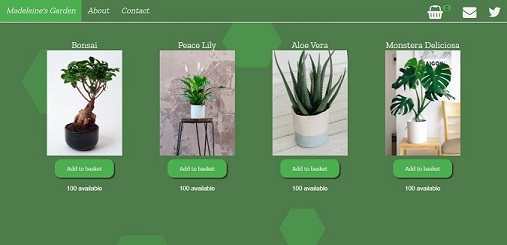

 A full-stack e-commerce application that displays the plant stock from a plant shop from the database via a Python REST API. Front end is a dynamic user-interface using HTML/CSS and JavaScript scripting. In the back end I have a Python REST API running with Flask and a SQLite database. I have used the HTTP protocol to link up my front end to my backend. I had a number of routes set up which linked to functions which, with use of SQLAlchemy, would put together SQL statements to get or update tables in my database. The responses from my HTTP requests returned to provide a visual representation of available stock and the ability to add to or remove plants from a functional basket. To test my REST API, I manually tested HTTP routes using Postman and later replaced it with a fully automated test suite using the Pytest framework and a test database that was used as a mock. I wrote functional unit-tests with Pytest to check every function worked as expected. This resulted in a fully-tested and operational backend that allowed communication between the REST API and the database.